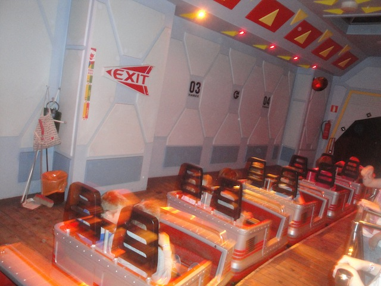
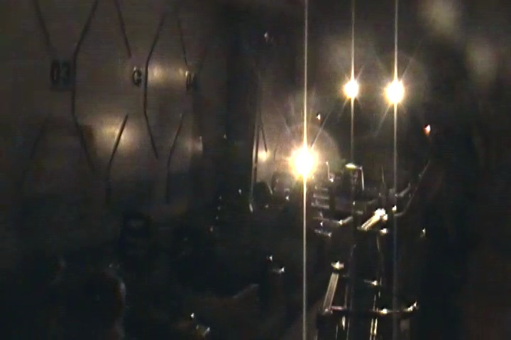

| |
Linnunrata Review

We're here at Linnanmäki to ride Linnunrata. This is the parks indoor coaster. Now if you're rolling your eyes, just saying "Oh great! Another sh*tty Space Mountain knock-off", that's exactly what this ride is. It's a sh*tty Space Mountian knock off. I know there are other Space Mountain knock offs that are actually good. But not this one. This is basically one of those giant Zeirer kiddy coasters in the dark. Oh boy. Another credit whoring coaster. Let's just get in the longass cars, pull down the lap bar, and away we go. We roll around a turn, and in an attempt to recreate the flashing blue lights on Space Mountain, it shines a bunch of blue strobe lights at you. I never had a problem with this on the ride, but when rewatching the POV, it gave me a headache. Oh well, that's what happens when you have sensitive eyesight. Moving on, we begin to climb up the lifthill. Though it's all indoors, and you can't see the ground, you can tell that we didn't climb super high on this lifthill. We then crest the lifthill, and head around a curved drop as we pass through a red light. And yeah. It's pretty much just curves from here. Go around some curves, see some pretty lights, have a little bit of fun, if you can accept that it's a sh*tty Space Mtn knock off. Eventually, you glide into the brake run, and see the #3 at the brake run. What is this? Sesame Street!? Why is the number 3 just at the brake run. We go around a turn and see 2, and 1. OK. We're counting down. What's coming up next? Are we about to launch? Nope. We glide right into the station. The ride is over. Well, that's certainly anti-climactic. But hey. What do you expect? It's a sh*tty Space Mountain knockoff. It's a credit and at least the line moves quickly. So give it that.
5/10
Location: Linnanmäki
Opened: 2000
Built by: Zeirer
Last Ridden: June 28, 2014
Linnunrata Photos

Home
|